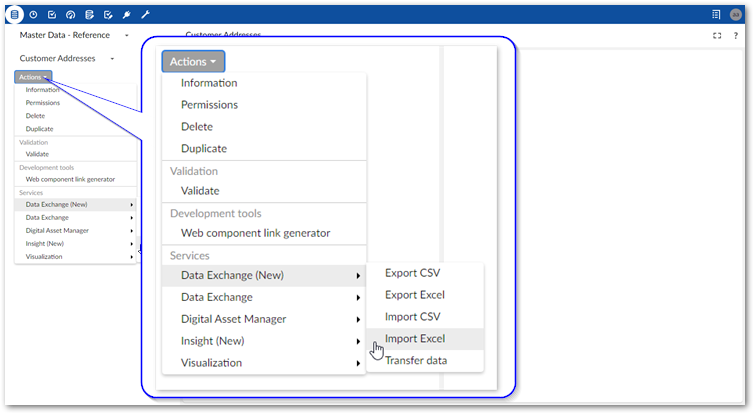
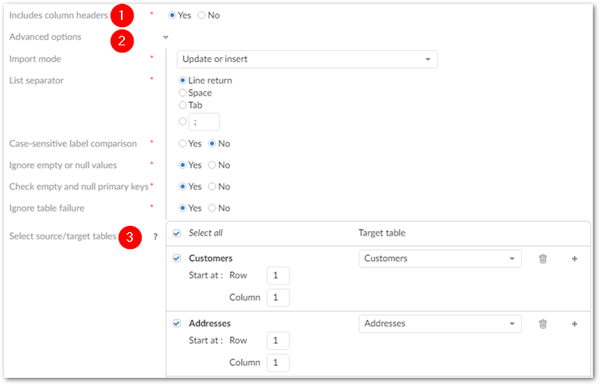
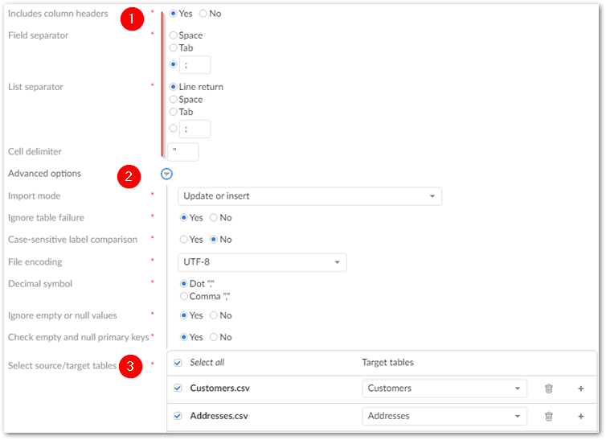
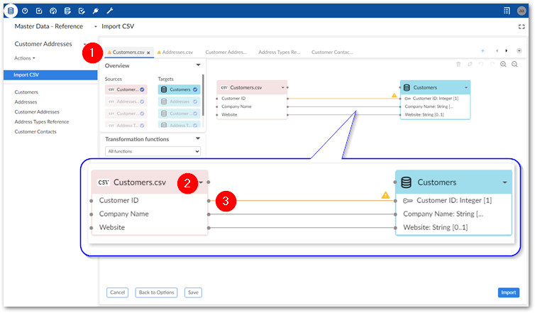
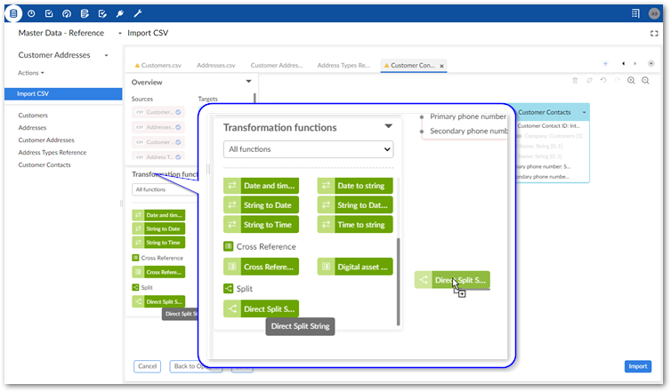
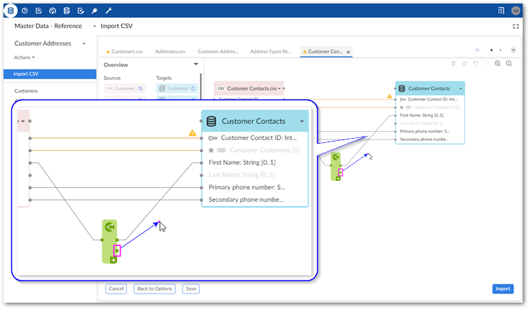

To import data from an archive of CSV files or an Excel file to multiple tables in a dataset:
Initiate the import process:
Navigate to the dataset that contains the target tables.
Initiate the import process from the dataset by selecting: Actions > Data Exchange (New) > Import CSV or Import Excel.

Browse to select the file containing the source data for the import.
After selecting the file, additional options display.
Optionally, select any previously saved template to load its configuration and mapping options. After loading, you can still make changes to configuration options. Changes to some import options impact the template's mappings. Depending on the circumstances, the add-on can automatically create default mappings. In other cases you might have to update mappings and transformations manually.
Update format-specific options:
The following image and list highlight some of the options when importing from Excel:

1) Includes column headers: | Use this option to indicate whether the data tables contain a header row. The starting position of the data is specified below in the Select source/target tables option. The add-on will match the text in the first (header) row of each source column with the field labels in the target location. The add-on automatically generates links between tables when the values in the source and target match. When this option is set to No, the add-on maps columns sequentially. It begins by mapping the first column in the source with the first column in the target and so forth until one or both run out of columns. |
2) Advanced options: | Import mode: Specifies how target data is updated. See the tooltip in the UI for descriptions of each mode. NoteDepending on your deployment environment's resources, you might have issues using the Insert only and Delete only modes when importing a large volume of data. If this issue occurs, use any of the other import modes. List separator: Specifies the character used in the source file to separate lists. Case-sensitive label comparison: Determines whether the add-on pays attention to letter case when matching the labels in the source and target. Ignore empty or null values: By default, existing records are not updated with empty or null values from the imported file. Disable this option to update the target with these values. Check empty and null primary keys: Specifies whether all primary keys are matched and validated between source and target. This option is enabled by default. Ignore table failure: Ensures that when one or more tables fails to import, the system still imports valid tables from the dataset. When disabled, the system rolls back all data when it fails to import a single table. |
3) Select source/target tables | Determines the tables to import from the source, specifies the data starting point for each source table, and sets the target tables. Where possible, the add-on automatically pairs source and target tables. Deselect any sources that you want to exclude. If a source table is included, it must have a corresponding target table selection. Add multiple targets to a source to import the same data to multiple tables. NoteYou can add a maximum of 20 target tables. |
The following image and list highlight some of the options when importing from CSV:

1) Basic options: | Includes column headers: Use this option to indicate whether the data table contains a header row at the position specified by the Data table starts at property. The add-on will match the text in the first row of each source column with the field labels in the target location. Automatic mappings are generated when the values in the source and target match. When this option is set to No, the add-on maps columns sequentially. It begins by mapping the first column in the source with the first column in the target and so forth until one or both run out of columns. Field separator: The value used by the source file to denote a field. List separator: The value used by the source file to denote a list. Cell delimiter: The value used by the source file to denote the beginning and end of a cell in the source file. |
2) Advanced options: | Import mode: Specifies how target data is updated. Case-sensitive label comparison: Determines whether the add-on pays attention to letter case when matching the labels in the source and target. Decimal symbol: Specifies how the source file represents the decimal symbol. Ignore empty or null values: Specifies whether to import values that are null or empty. Check empty and null primary keys: Specifies whether all primary keys are matched and validated between source and target. This option is enabled by default. |
3) Select source/target tables | Determines the tables to import from the source and sets their targets. Where possible, the add-on automatically pairs source and target tables. Deselect any sources that you want to exclude. If a source table is included, it must have a corresponding target table selection. Add multiple targets to a source to import the same data to multiple tables. NoteYou can add a maximum of 20 target tables. If you do not select all source tables and later decide to include one or more of the remaining tables, you can accomplish this using the options in the Mapping screen. See the next step for more details. |
Optionally, run an import simulation to preview the import result:
Click Simulation at the bottom of the screen. Note, this option is also available from the mapping screen.
Configure the simulation options as desired. Select the '?' icon next to the configuration options and message categories in the report to view their description.
and click Run simulation to begin.
The report shows messages at the error, warning, and information levels. However, please note that the simulation does not take table triggers into account.
Optionally, update or create mappings:
The following steps provide only high-level mapping instructions. See Mapping interface reference for more detailed information on mapping and transformations.
Select Mapping to enter the mapping screen where you can update the default data mappings or add data transformations. The add-on automatically creates mappings where the source and target have the same labels. A mapping identifies which data is extracted from the source and specifies its target destination.
The following image and list describe some features of table and field mapping:

1) Table mapping tabs | Each tab contains the mappings between a different pair of source and target tables. The icons to the right allow you to locate and navigate between tabs. Additionally, you can create new tabs, and add any unmapped source and target tables by dragging them from the Overview box to the mapping pane. Note that the '+' icon is disabled when all sources are already included in a mapping tab. Please note that:
|
2) Source (pink) and target (blue) tables | By default, the data source displays on the left and the target on the right. Each table header has a label and uses an icon to show its type and selecting the small arrow collapses and expands the table. The headers also have connection points. Drag this top point to automatically generate mappings between tables. |
3) Mappings | Each line is a mapping. An orange color and icon indicates there is a warning for a mapping. Select the icon to view the warning. Drag from one field's connection point to another to create a mapping. To delete a mapping, select it and then select the trash icon. To create a mapping, drag from a source field's connection point to a connection point in the target. |
Optionally, add transformation functions:
Transformation functions allow you change the source data to meet technical or business requirements in the target. The add-on ships with several transformation functions that support common business cases. For more details on how to use transformation functions, see Mapping interface reference. For information on the available transformations and their descriptions, see Transformation function reference.
To add a transformation, select and drag the desired transformation function to the mapping screen.

Select and drag fields from the source to the function's input (left) and connect the function's output (right) to target fields.

Double-click the transformation function to edit its parameters. Each function is different, for a complete list, see Transformation function reference.
Optionally, select Save to store your settings as a template for re-use. For more information on using templates, see Using templates.
Click Import to complete the process.
If errors prevent any of the records from importing correctly, the add-on presents you with the option of downloading an Excel file containing the invalid data. If you are importing CSV, the files containing invalid data for each table are combined in a zip file. If you are importing Excel, the invalid data for each table is added to a separate sheet in the downloadable file. Depending on your circumstances, you can correct the data directly in the files and re-import it.